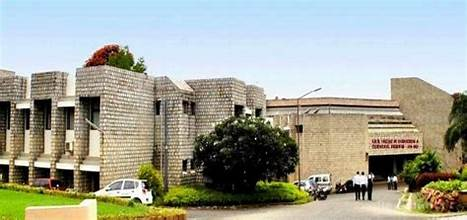
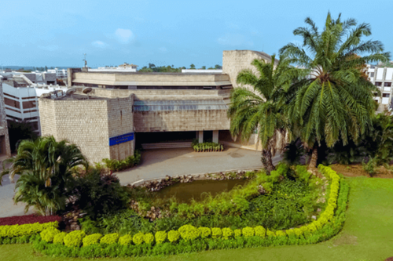
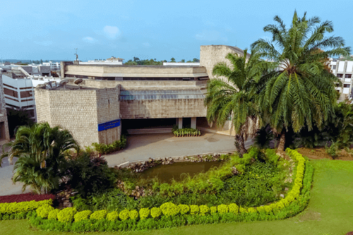

About SDMCET
SDMCET, or Shri Dharmasthala Manjunatheshwara College of Engineering and Technology, is an autonomous private engineering college located in Dharwad, Karnataka, India . Founded under the auspices of the SDM Educational Society (R), it operates within the sacred ambit of Shrikshetra Dharmasthala. The college provides undergraduate courses and is known for its high ranking among engineering colleges in India . The campus spans across 70 acres in North Karnataka, offering an idyllic environment with impressive architecture, lush verdant woods, and landscaped gardens . SDMCET aims for the overall holistic development of its students, fostering academic excellence and nurturing talents through various departments, including the Department of Physical Education & Sports Science . The college emphasizes leadership, appreciating the services and efforts of its principal, faculty, and staff in maintaining its esteemed position in the field of engineering education
 
